课程目标:
- 学会使用CSS选择器
- 熟记CSS样式和外观属性
- 熟练掌握CSS各种选择器
- 熟练掌握CSS各种选择器
- 熟练掌握CSS三种显示模式
- 熟练掌握CSS背景属性
- 熟练掌握CSS三大特性
- 熟练掌握CSS盒子模型
- 熟练掌握CSS浮动
10.熟练掌握CSS定位
11.熟练掌握CSS高级技巧强化CSS
typora-copy-images-to: media
CSS的发展历程
从HTML被发明开始，样式就以各种形式存在。不同的浏览器结合它们各自的样式语言为用户提供页面效果的控制。最初的HTML只包含很少的显示属性。
随着HTML的成长，为了满足页面设计者的要求，HTML添加了很多显示功能。但是随着这些功能的增加，HTML变的越来越杂乱，而且HTML页面也越来越臃肿。于是CSS便诞生了。
CSS 网页的美容师
CSS的出现，拯救了混乱的HTML，当让更加拯救了我们web开发者。 让我们的网页更加丰富多彩。
CSS的最大贡献就是： 让 HTML 从样式中解脱苦海， 实现了 HTML 专注去做 结构呈现。 而样式交给 CSS 后，你完全可以放心的早点洗洗睡了！

而且。。。。。 CSS 做的很出色，如果JavaScript是网页的魔法师，那么CSS它是我们网页的美容师，不信，你看:

ps: 你跟Angelababy只差了一个妆容的距离
来个更直观的认识吧：

有人说， 没有不漂亮的女人，只有不会打扮的女人。
我想说， 没有不好看的网页，只有不会CSS的前端。
网页添加 CSS和不添加CSS 的对比：
带有CSS的页面

没有CSS的页面

CSS初识
CSS(Cascading Style Sheets)
CSS通常称为CSS样式表或层叠样式表（级联样式表），主要用于设置HTML页面中的文本内容（字体、大小、对齐方式等）、图片的外形（宽高、边框样式、边距等）以及版面的布局等外观显示样式。
CSS以HTML为基础，提供了丰富的功能，如字体、颜色、背景的控制及整体排版等，而且还可以针对不同的浏览器设置不同的样式。
CSS样式规则
使用HTML时，需要遵从一定的规范。CSS亦如此，要想熟练地使用CSS对网页进行修饰，首先需要了解CSS样式规则，具体格式如下：

1 | 在上面的样式规则中: |
CSS字体样式属性
font-size:字号大小
font-size属性用于设置字号，该属性的值可以使用相对长度单位，也可以使用绝对长度单位。其中，相对长度单位比较常用，推荐使用像素单位px，绝对长度单位使用较少。具体如下：

font-family:字体
font-family属性用于设置字体。网页中常用的字体有宋体、微软雅黑、黑体等，例如将网页中所有段落文本的字体设置为微软雅黑，可以使用如下CSS样式代码：
p{ font-family:”微软雅黑”;}
可以同时指定多个字体，中间以逗号隔开，表示如果浏览器不支持第一个字体，则会尝试下一个，直到找到合适的字体。
常用技巧：
1 | 1. 现在网页中普遍使用14px+。 |
CSS Unicode字体
在 CSS 中设置字体名称，直接写中文是可以的。但是在文件编码（GB2312、UTF-8 等）不匹配时会产生乱码的错误。xp 系统不支持 类似微软雅黑的中文。
方案一： 你可以使用英文来替代。 比如 font-family:”Microsoft Yahei”。
方案二： 在 CSS 直接使用 Unicode 编码来写字体名称可以避免这些错误。使用 Unicode 写中文字体名称，浏览器是可以正确的解析的。
font-family: “\5FAE\8F6F\96C5\9ED1”，表示设置字体为“微软雅黑”。
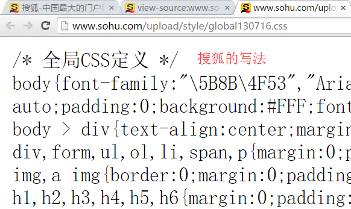
可以通过escape() 来测试属于什么字体。
| 字体名称 | 英文名称 | Unicode 编码 |
|---|---|---|
| 宋体 | SimSun | \5B8B\4F53 |
| 新宋体 | NSimSun | \65B0\5B8B\4F53 |
| 黑体 | SimHei | \9ED1\4F53 |
| 微软雅黑 | Microsoft YaHei | \5FAE\8F6F\96C5\9ED1 |
| 楷体_GB2312 | KaiTi_GB2312 | \6977\4F53_GB2312 |
| 隶书 | LiSu | \96B6\4E66 |
| 幼园 | YouYuan | \5E7C\5706 |
| 华文细黑 | STXihei | \534E\6587\7EC6\9ED1 |
| 细明体 | MingLiU | \7EC6\660E\4F53 |
| 新细明体 | PMingLiU | \65B0\7EC6\660E\4F53 |
为了照顾不同电脑的字体安装问题，我们尽量只使用宋体和微软雅黑中文字体
font-weight:字体粗细
字体加粗除了用 b 和 strong 标签之外，可以使用CSS 来实现，但是CSS 是没有语义的。
1 | font-weight属性用于定义字体的粗细，其可用属性值：normal、bold、bolder、lighter、100~900（100的整数倍）。 |
小技巧：
1 | 数字 400 等价于 normal，而 700 等价于 bold。 但是我们更喜欢用数字来表示。 |
font-style:字体风格
字体倾斜除了用 i 和 em 标签之外，可以使用CSS 来实现，但是CSS 是没有语义的。
font-style属性用于定义字体风格，如设置斜体、倾斜或正常字体，其可用属性值如下：
normal：默认值，浏览器会显示标准的字体样式。
italic：浏览器会显示斜体的字体样式。
oblique：浏览器会显示倾斜的字体样式。
小技巧：
1 | 平时我们很少给文字加斜体，反而喜欢给斜体标签（em，i）改为普通模式。 |
font:综合设置字体样式 (重点)
font属性用于对字体样式进行综合设置，其基本语法格式如下：
1 | 选择器{font: font-style font-weight font-size/line-height font-family;} |
1 | 使用font属性时，必须按上面语法格式中的顺序书写，不能更换顺序，各个属性以空格隔开。 |
开发者工具（chrome）
此工具是我们的必备工具，以后代码出了问题，我们首先第一反应就是：
“按F12”或者是 “shift+ctrl+i” 打开 开发者工具。
菜单： 右击网页空白出—查看

小技巧：
- ctrl+滚轮 可以 放大开发者工具代码大小。
- 左边是HTML元素结构 右边是CSS样式。
- 右边CSS样式可以改动数值和颜色查看更改后效果。
选择器（重点）
要想将CSS样式应用于特定的HTML元素，首先需要找到该目标元素。在CSS中，执行这一任务的样式规则部分被称为选择器（选择符）。

如上图所以，要把里面的小黄人分为2组，最快的方法怎办？
很多， 比如 一只眼睛的一组，剩下的一组
这就用到基础选择器组：
标签选择器（元素选择器）
标签选择器是指用HTML标签名称作为选择器，按标签名称分类，为页面中某一类标签指定统一的CSS样式。其基本语法格式如下：
1 | 标签名{属性1:属性值1; 属性2:属性值2; 属性3:属性值3; } 或者 |
标签选择器最大的优点是能快速为页面中同类型的标签统一样式，同时这也是他的缺点，不能设计差异化样式。
课堂案例：
传智简介
类选择器
类选择器使用“.”（英文点号）进行标识，后面紧跟类名，其基本语法格式如下：
1 | .类名{属性1:属性值1; 属性2:属性值2; 属性3:属性值3; } |
1 | 标签调用的时候用 class=“类名” 即可。 |
类选择器最大的优势是可以为元素对象定义单独或相同的样式。
小技巧：
1 | 1.长名称或词组可以使用中横线来为选择器命名。 |
输入的时候少按一个shift键;
浏览器兼容问题 (比如使用tips的选择器命名，在IE6是无效的)
能良好区分JavaScript变量命名(JS变量命名是用“”)
1 | 3.不要纯数字、中文等命名， 尽量使用英文字母来表示。 |
猜谜底游戏：
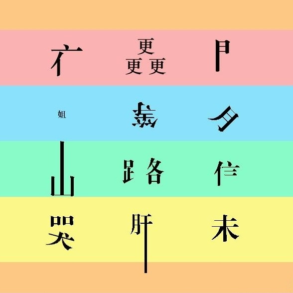 你猜？
命名规范： 见附件（Web前端开发规范手册.doc）
命名是我们通俗约定的，但是没有规定必须用这些常用的命名。
课堂案例：

1 | <head> |
多类名选择器
我们可以给标签指定多个类名，从而达到更多的选择目的。

注意：
1 | 1. 样式显示效果跟HTML元素中的类名先后顺序没有关系,受CSS样式书写的上下顺序有关。 |
多类名选择器在后期布局比较复杂的情况下，还是较多使用的。
1 | <div class="pink fontWeight font20">亚瑟</div> |
id选择器
id选择器使用“#”进行标识，后面紧跟id名，其基本语法格式如下：
1 | #id名{属性1:属性值1; 属性2:属性值2; 属性3:属性值3; } |
该语法中，id名即为HTML元素的id属性值，大多数HTML元素都可以定义id属性，元素的id值是唯一的，只能对应于文档中某一个具体的元素。
用法基本和类选择器相同。
id选择器和类选择器区别
W3C标准规定，在同一个页面内，不允许有相同名字的id对象出现，但是允许相同名字的class。
类选择器（class） 好比人的名字， 是可以多次重复使用的， 比如 张伟 王伟 李伟 李娜
id选择器 好比人的身份证号码， 全中国是唯一的， 不得重复。 只能使用一次。
id选择器和类选择器最大的不同在于 使用次数上。

通配符选择器
通配符选择器用“*”号表示，他是所有选择器中作用范围最广的，能匹配页面中所有的元素。其基本语法格式如下：
1 | * { 属性1:属性值1; 属性2:属性值2; 属性3:属性值3; } |
例如下面的代码，使用通配符选择器定义CSS样式，清除所有HTML标记的默认边距。
1 | * { |
注意：
这个通配符选择器，就像我们的电影明星中的梦中情人， 想想它就好了，但是它不会和你过日子。
伪类选择器
伪类选择器用于向某些选择器添加特殊的效果。比如给链接添加特殊效果， 比如可以选择 第1个，第n个元素。
1 | 为了和我们刚才学的类选择器相区别， 类选择器是一个点 比如 .demo {} 而我们的伪类 用 2个点 就是 冒号 比如 :link{} |
链接伪类选择器
- :link / 未访问的链接 /
- :visited / 已访问的链接 /
- :hover / 鼠标移动到链接上 /
- :active / 选定的链接 /
注意写的时候，他们的顺序尽量不要颠倒 按照 lvha 的顺序。 love hate 爱上了讨厌 记忆法 或者 lv 包包 非常 hao
1 | a { /* a是标签选择器 所有的链接 */ |
结构(位置)伪类选择器（CSS3)
- :first-child :选取属于其父元素的首个子元素的指定选择器
- :last-child :选取属于其父元素的最后一个子元素的指定选择器
- :nth-child(n) ： 匹配属于其父元素的第 N 个子元素，不论元素的类型
- :nth-last-child(n) ：选择器匹配属于其元素的第 N 个子元素的每个元素，不论元素的类型，从最后一个子元素开始计数。
n 可以是数字、关键词或公式 -
1 | li:first-child { /* 选择第一个孩子 */ |
目标伪类选择器(CSS3)
:target目标伪类选择器 :选择器可用于选取当前活动的目标元素
1 | :target { |
CSS注释
1 | CSS规则是使用 /* 需要注释的内容 */ 进行注释的，即在需要注释的内容前使用 “/*” 标记开始注释，在内容的结尾使用 “*/”结束。 |
例如：
1 | p { |
CSS外观属性
color:文本颜色
color属性用于定义文本的颜色，其取值方式有如下3种：
1.预定义的颜色值，如red，green，blue等。
2.十六进制，如#FF0000，#FF6600，#29D794等。实际工作中，十六进制是最常用的定义颜色的方式。
3.RGB代码，如红色可以表示为rgb(255,0,0)或rgb(100%,0%,0%)。
需要注意的是，如果使用RGB代码的百分比颜色值，取值为0时也不能省略百分号，必须写为0%。
line-height:行间距
ine-height属性用于设置行间距，就是行与行之间的距离，即字符的垂直间距，一般称为行高。line-height常用的属性值单位有三种，分别为像素px，相对值em和百分比%，实际工作中使用最多的是像素px
一般情况下，行距比字号大7.8像素左右就可以了。
text-align:水平对齐方式
1 | text-align属性用于设置文本内容的水平对齐，相当于html中的align对齐属性。其可用属性值如下： |
left：左对齐（默认值）
right：右对齐
center：居中对齐
text-indent:首行缩进
text-indent属性用于设置首行文本的缩进，其属性值可为不同单位的数值、em字符宽度的倍数、或相对于浏览器窗口宽度的百分比%，允许使用负值, 建议使用em作为设置单位。
1em 就是一个字的宽度 如果是汉字的段落， 1em 就是一个汉字的宽度
letter-spacing:字间距
letter-spacing属性用于定义字间距，所谓字间距就是字符与字符之间的空白。其属性值可为不同单位的数值，允许使用负值，默认为normal。
word-spacing:单词间距
word-spacing属性用于定义英文单词之间的间距，对中文字符无效。和letter-spacing一样，其属性值可为不同单位的数值，允许使用负值，默认为normal。
word-spacing和letter-spacing均可对英文进行设置。不同的是letter-spacing定义的为字母之间的间距，而word-spacing定义的为英文单词之间的间距。
颜色半透明(css3)
文字颜色到了CSS3我们可以采取半透明的格式了语法格式如下：
1 | color: rgba(r,g,b,a) a 是alpha 透明的意思 取值范围 0~1之间 color: rgba(0,0,0,0.3) |
文字阴影(CSS3)
以后我们可以给我们的文字添加阴影效果了 Shadow 影子
1 | text-shadow:水平位置 垂直位置 模糊距离 阴影颜色; |

- 前两项是必须写的。 后两项可以选写。

sublime快捷方式
sublime可以快速提高我们代码的书写方式
生成标签 直接输入标签名 按tab键即可 比如 div 然后tab 键， 就可以生成
如果想要生成多个相同标签 加上 就可以了 比如 div3 就可以快速生成3个div
如果有父子级关系的标签，可以用 > 比如 ul > li就可以了
如果有兄弟关系的标签，用 + 就可以了 比如 div+p
如果生成带有类名或者id名字的， 直接写 .demo 或者 #two tab 键就可以了
引入CSS样式表（书写位置）
CSS可以写到那个位置？ 是不是一定写到html文件里面呢？
行内式（内联样式）
是通过标签的style属性来设置元素的样式，其基本语法格式如下：
1 | <标签名 style="属性1:属性值1; 属性2:属性值2; 属性3:属性值3;"> 内容 </标签名> |
语法中style是标签的属性，实际上任何HTML标签都拥有style属性，用来设置行内式。其中属性和值的书写规范与CSS样式规则相同，行内式只对其所在的标签及嵌套在其中的子标签起作用。
内部样式表（内嵌式）
内嵌式是将CSS代码集中写在HTML文档的head头部标签中，并且用style标签定义，其基本语法格式如下：
1 | <head> |
语法中，style标签一般位于head标签中title标签之后，也可以把他放在HTML文档的任何地方。
外部样式表（外链式）
链入式是将所有的样式放在一个或多个以.CSS为扩展名的外部样式表文件中，通过link标签将外部样式表文件链接到HTML文档中，其基本语法格式如下：
1 | <head> |
注意： link 是个单标签哦!!!
该语法中，link标签需要放在head头部标签中，并且必须指定link标签的三个属性，具体如下：
1 | href：定义所链接外部样式表文件的URL，可以是相对路径，也可以是绝对路径。 |
三种样式表总结
| 样式表 | 优点 | 缺点 | 使用情况 | 控制范围 |
|---|---|---|---|---|
| 行内样式表 | 书写方便，权重高 | 没有实现样式和结构相分离 | 较少 | 控制一个标签（少） |
| 内嵌样式表 | 部分结构和样式相分离 | 没有彻底分离 | 较多 | 控制一个页面（中） |
| 外部样式表 | 完全实现结构和样式相分离 | 需要引入 | 最多，强烈推荐 | 控制整个站点（多） |
标签显示模式（display）
非洲黑人： 皮肤内黑色素含量高，以吸收阳光中的紫外线，保护皮肤内部结构免遭损害，头发象羊毛一样卷曲，使每根卷发周围都有许多空隙，空隙充满空气，卷发有隔热作用。
欧洲白人： 生活寒带或着是说常年温度较低的地缘,加上年日照时间少，身体的黑色素沉淀比较少所以出现皮肤、发色、瞳晕都呈现浅色
传智黄人： 我中间的。。。
最重要的总结： 是为了更好的适应环境而完成的自然选择。
同理，我们网页的标签非常多，再不同地方会用到不同类型的标签，以便更好的完成我们的网页。
标签的类型(显示模式)
HTML标签一般分为块标签和行内标签两种类型，它们也称块元素和行内元素。具体如下：
块级元素(block-level)
每个块元素通常都会独自占据一整行或多整行，可以对其设置宽度、高度、对齐等属性，常用于网页布局和网页结构的搭建。
1 | 常见的块元素有<h1>~<h6>、<p>、<div>、<ul>、<ol>、<li>等，其中<div>标签是最典型的块元素。 |

块级元素的特点：
（1）总是从新行开始
（2）高度，行高、外边距以及内边距都可以控制。
（3）宽度默认是容器的100%
（4）可以容纳内联元素和其他块元素。
行内元素(inline-level)
行内元素（内联元素）不占有独立的区域，仅仅靠自身的字体大小和图像尺寸来支撑结构，一般不可以设置宽度、高度、对齐等属性，常用于控制页面中文本的样式。
1 | 常见的行内元素有<a>、<strong>、<b>、<em>、<i>、<del>、<s>、<ins>、<u>、<span>等，其中<span>标签最典型的行内元素。 |
 我一样重要
我一样重要
行内元素的特点：
（1）和相邻行内元素在一行上。
（2）高、宽无效，但水平方向的padding和margin可以设置，垂直方向的无效。
（3）默认宽度就是它本身内容的宽度。
（4）行内元素只能容纳文本或则其他行内元素。（a特殊）
 注意：
注意：
- 只有 文字才 能组成段落 因此 p 里面不能放块级元素，同理还有这些标签h1,h2,h3,h4,h5,h6,dt，他们都是文字类块级标签，里面不能放其他块级元素。
- 链接里面不能再放链接。
块级元素和行内元素区别
1 | 块级元素的特点： |
1 | 行内元素的特点： |
行内块元素（inline-block）
1 | 在行内元素中有几个特殊的标签——<img />、<input />、<td>，可以对它们设置宽高和对齐属性，有些资料可能会称它们为行内块元素。 |
三者的 形状
| 显示模式 | 形状 | 图片 |
|---|---|---|
| 块级元素 | 面包 |  |
| 行内元素 | 牛奶 |  |
| 行内块元素 | 果冻 |  |
CSS复合选择器
复合选择器是由两个或多个基础选择器，通过不同的方式组合而成的,目的是为了可以选择更准确更精细的目标元素标签。
交集选择器
交集选择器由两个选择器构成，其中第一个为标签选择器，第二个为class选择器，两个选择器之间不能有空格，如h3.special。

记忆技巧：
交集选择器 是 并且的意思。 即…又…的意思
1 | 比如： p.one 选择的是： 类名为 .one 的 段落标签。 |
用的相对来说比较少，不太建议使用。
并集选择器
并集选择器（CSS选择器分组）是各个选择器通过逗号连接而成的，任何形式的选择器（包括标签选择器、class类选择器id选择器等），都可以作为并集选择器的一部分。如果某些选择器定义的样式完全相同，或部分相同，就可以利用并集选择器为它们定义相同的CSS样式。

记忆技巧：
并集选择器 和 的意思， 就是说，只要逗号隔开的，所有选择器都会执行后面样式。
1 | 比如 .one, p , #test {color: #F00;} 表示 .one 和 p 和 #test 这三个选择器都会执行颜色为红色。 通常用于集体声明。 |
 他和他，在一起， 在一起 一起的意思
他和他，在一起， 在一起 一起的意思
后代选择器
后代选择器又称为包含选择器，用来选择元素或元素组的后代，其写法就是把外层标签写在前面，内层标签写在后面，中间用空格分隔。当标签发生嵌套时，内层标签就成为外层标签的后代。

子孙后代都可以这么选择。 或者说，它能选择任何包含在内 的标签。

子元素选择器
子元素选择器只能选择作为某元素子元素的元素。其写法就是把父级标签写在前面，子级标签写在后面，中间跟一个 > 进行连接，注意，符号左右两侧各保留一个空格。
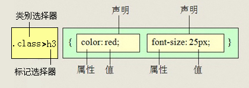
白话： 这里的子 指的是 亲儿子 不包含孙子 重孙子之类。
1 | 比如： .demo > h3 {color: red;} 说明 h3 一定是demo 亲儿子。 demo 元素包含着h3。 |
测试题
1 | <div class="nav"> <!-- 主导航栏 --> |
在不修改以上代码的前提下，完成以下任务：
链接 登录 的颜色为红色。
主导航栏里面的文字颜色为绿色。
主导航栏和侧导航栏里面文字都是16像素并且是微软雅黑。
收藏本站 要求字体加粗。
属性选择器
| **选择器 | **示例 | **含义 |
|---|---|---|
| E[attr]** | 存在attr属性即可 | |
| E[attr=val]** | 属性值完全等于val | |
| E[attr*=val]** | 属性值里包含val字符并且在“任意”位置 | |
| E[attr^=val]** | 属性值里包含val字符并且在“开始”位置 | |
| E[attr$=val]** | 属性值里包含val字符并且在“结束”位置 |
1 | /* 获取到 拥有 该属性的元素 */ |
1 | <ul> |
伪元素选择器（CSS3)
- E::first-letter文本的第一个单词或字（如中文、日文、韩文等）
- E::first-line 文本第一行；
- E::selection 可改变选中文本的样式；
1 | p::first-letter { |
4、E::before和E::after
在E元素内部的开始位置和结束位创建一个元素，该元素为行内元素，且必须要结合content属性使用。
1 | div::befor { |
E:after、E:before 在旧版本里是伪元素，CSS3的规范里“:”用来表示伪类，“::”用来表示伪元素，但是在高版本浏览器下E:after、E:before会被自动识别为E::after、E::before，这样做的目的是用来做兼容处理。
E:after、E:before后面的练习中会反复用到，目前只需要有个大致了解
“:” 与 “::” 区别在于区分伪类和伪元素
CSS 背景(background)
CSS 可以添加背景颜色和背景图片，以及来进行图片设置。
| background-color | 背景颜色 |
|---|---|
| background-image | 背景图片地址 |
| background-repeat | 是否平铺 |
| background-position | 背景位置 |
| background-attachment | 背景固定还是滚动 |
| 背景的合写（复合属性） | |
| background:背景颜色 背景图片地址 背景平铺 背景滚动 背景位置 |
背景图片(image)
语法：
1 | background-image : none | url (url) |
参数：
none : 无背景图（默认的）
url : 使用绝对或相对地址指定背景图像
background-image 属性允许指定一个图片展示在背景中（只有CSS3才可以多背景）可以和 background-color 连用。 如果图片不重复地话，图片覆盖不到地地方都会被背景色填充。 如果有背景图片平铺，则会覆盖背景颜色。
小技巧： 我们提倡 背景图片后面的地址，url不要加引号。
背景平铺（repeat）
语法：
1 | background-repeat : repeat | no-repeat | repeat-x | repeat-y |
参数：
repeat : 背景图像在纵向和横向上平铺（默认的）
no-repeat : 背景图像不平铺
repeat-x : 背景图像在横向上平铺
repeat-y : 背景图像在纵向平铺
设置背景图片时，默认把图片在水平和垂直方向平铺以铺满整个元素。
repeat-x : 背景图像在横向上平铺

repeat-y : 背景图像在纵向平铺

设置背景图片时，默认把图片在水平和垂直方向平铺以铺满整个元素。

背景位置(position)
语法：
1 | background-position : length || length |
参数：
length : 百分数 | 由浮点数字和单位标识符组成的长度值。请参阅长度单位
position : top | center | bottom | left | center | right
说明：
设置或检索对象的背景图像位置。必须先指定background-image属性。默认值为：(0% 0%)。
如果只指定了一个值，该值将用于横坐标。纵坐标将默认为50%。第二个值将用于纵坐标。
注意：
- position 后面是x坐标和y坐标。 可以使用方位名词或者 精确单位。
- 如果和精确单位和方位名字混合使用，则必须是x坐标在前，y坐标后面。比如 background-position: 15px top; 则 15px 一定是 x坐标 top是 y坐标。
实际工作用的最多的，就是背景图片居中对齐了。
背景附着
语法：
1 | background-attachment : scroll | fixed |
参数：
scroll : 背景图像是随对象内容滚动
fixed : 背景图像固定
说明：
设置或检索背景图像是随对象内容滚动还是固定的。
背景简写
background属性的值的书写顺序官方并没有强制标准的。为了可读性，建议大家如下写：
background:背景颜色 背景图片地址 背景平铺 背景滚动 背景位置
1 | background: transparent url(image.jpg) repeat-y scroll 50% 0 ; |
背景透明(CSS3)
CSS3支持背景半透明的写法语法格式是:
1 | background: rgba(0,0,0,0.3); |
最后一个参数是alpha 透明度 取值范围 0~1之间
注意： 背景半透明是指盒子背景半透明， 盒子里面的内容不收影响。
同样， 可以给 文字和边框透明 都是 rgba 的格式来写。
1 | color:rgba(0,0,0,0.3); |
背景缩放(CSS3)
通过background-size设置背景图片的尺寸，就像我们设置img的尺寸一样，在移动Web开发中做屏幕适配应用非常广泛。
其参数设置如下：
a) 可以设置长度单位(px)或百分比（设置百分比时，参照盒子的宽高）
b) 设置为cover时，会自动调整缩放比例，保证图片始终填充满背景区域，如有溢出部分则会被隐藏。
c) 设置为contain会自动调整缩放比例，保证图片始终完整显示在背景区域。
1 | background-image: url('images/gyt.jpg'); |
多背景(CSS3)
以逗号分隔可以设置多背景，可用于自适应布局
1 | background-image: url('images/gyt.jpg'),url('images/robot.png'); |
CSS 三大特性
层叠 继承 优先级 是我们学习CSS 必须掌握的三个特性。
CSS层叠性
所谓层叠性是指多种CSS样式的叠加。
是浏览器处理冲突的一个能力,如果一个属性通过两个选择器设置到同一个元素上，那么这个时候一个属性就会将另一个属性层叠掉
比如先给某个标签指定了内部文字颜色为红色，接着又指定了颜色为蓝色，此时出现一个标签指定了相同样式不同值的情况，这就是样式冲突。
一般情况下，如果出现样式冲突，则会按照CSS书写的顺序，以最后的样式为准。
1 | CSS最后的执行口诀： 长江后浪推前浪，前浪死在沙滩上。 |

CSS继承性
所谓继承性是指书写CSS样式表时，子标签会继承父标签的某些样式，如文本颜色和字号。想要设置一个可继承的属性，只需将它应用于父元素即可。
简单的理解就是： 子承父业。
1 | CSS最后的执行口诀： 龙生龙，凤生凤，老鼠生的孩子会打洞。 |

注意：
1 | 恰当地使用继承可以简化代码，降低CSS样式的复杂性。子元素可以继承父元素的样式（text-，font-，line-这些元素开头的都可以继承，以及color属性） |
CSS优先级
定义CSS样式时，经常出现两个或更多规则应用在同一元素上，这时就会出现优先级的问题。
在考虑权重时，初学者还需要注意一些特殊的情况，具体如下：
1 | 继承样式的权重为0。即在嵌套结构中，不管父元素样式的权重多大，被子元素继承时，他的权重都为0，也就是说子元素定义的样式会覆盖继承来的样式。 |
CSS特殊性（Specificity）
关于CSS权重，我们需要一套计算公式来去计算，这个就是 CSS Specificity，我们称为CSS 特性或称非凡性，它是一个衡量CSS值优先级的一个标准 具体规范入如下：
specificity用一个四位的数 字串(CSS2是三位)来表示，更像四个级别，值从左到右，左面的最大，一级大于一级，数位之间没有进制，级别之间不可超越。
| 继承或者* 的贡献值 | 0,0,0,0 |
|---|---|
| 每个元素（标签）贡献值为 | 0,0,0,1 |
| 每个类，伪类贡献值为 | 0,0,1,0 |
| 每个ID贡献值为 | 0,1,0,0 |
| 每个行内样式贡献值 | 1,0,0,0 |
| 每个!important贡献值 | ∞ 无穷大 |
比如的例子：
1 | div ul li ------> 0,0,0,3 |
注意： 数位之间没有进制 比如说： 0,0,0,5 + 0,0,0,5 =0,0,0,10 而不是 0,0, 1, 0， 所以不会存在10个div能赶上一个类选择器的情况。
总结优先级：
- 使用了 !important声明的规则。
- 内嵌在 HTML 元素的 style属性里面的声明。
- 使用了 ID 选择器的规则。
- 使用了类选择器、属性选择器、伪元素和伪类选择器的规则。
- 使用了元素选择器的规则。
- 只包含一个通用选择器的规则。
1 | 总结：权重是优先级的算法，层叠是优先级的表现 |
盒子模型（CSS重点）
其实，CSS就三个大模块： 盒子模型 、 浮动 、 定位，其余的都是细节。要求这三部分，无论如何也要学的非常精通。
所谓盒子模型就是把HTML页面中的元素看作是一个矩形的盒子，也就是一个盛装内容的容器。每个矩形都由元素的内容、内边距（padding）、边框（border）和外边距（margin）组成。
看透网页布局的本质
网页布局中，我们是如何把里面的文字，图片，按照美工给我们的效果图排列的整齐有序呢？

牛奶是怎样运输，让消费者购买的呢？
我们说过，行内元素比如 文字 类似牛奶，也需要一个盒子把他们装起来，我们前面学过的双标签都是一个盒子。有了盒子，我们就可以随意的，自由的，摆放位置了。
看透网页布局的本质： 把网页元素比如文字图片等等，放入盒子里面，然后利用CSS摆放盒子的过程，就是网页布局。

CSS 其实没有太多逻辑可言 ， 类似我们小时候玩的积木,我们可以自由的，随意的摆放出我们想要的效果。
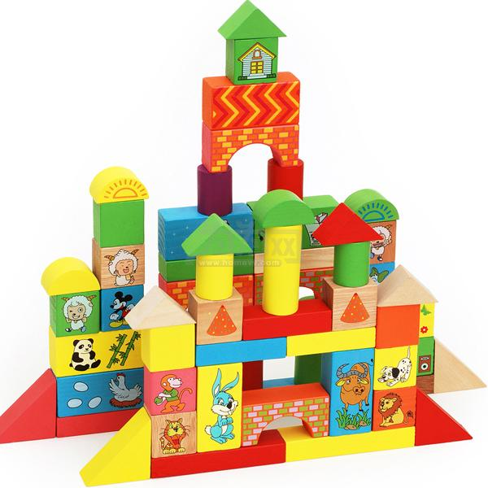
盒子模型（Box Model）
这里略过 老旧的ie盒子模型（IE6以下），对不起，我都没见过IE5的浏览器。
CSS3的 盒子模型 我们后面会讲。
首先，我们来看一张图，来体会下什么是盒子模型。

所有的文档元素（标签）都会生成一个矩形框，我们成为元素框（element box），它描述了一个文档元素再网页布局汇总所占的位置大小。因此，每个盒子除了有自己大小和位置外，还影响着其他盒子的大小和位置。

盒子边框（border）
边框就是那层皮。 橘子皮。。柚子皮。。橙子皮。。。
语法：
1 | border : border-width || border-style || border-color |
边框属性—设置边框样式（border-style）
边框样式用于定义页面中边框的风格，常用属性值如下：
1 | none：没有边框即忽略所有边框的宽度（默认值） |
表格的细线边框
以前学过的html表格边框很粗，这里只需要CSS一句话就可以美观起来。 让我们真的相信，CSS就是我们的白马王子（白雪公主）。
table{ border-collapse:collapse; }
border-collapse:collapse; 表示边框合并在一起。
盒子边框总结表
| 设置内容 | 样式属性 | 常用属性值 |
| 上边框 | border-top-style:样式; border-top-width:宽度;border-top-color:颜色;border-top:宽度 样式 颜色; | |
| 下边框 | border-bottom-style:样式;border- bottom-width:宽度;border- bottom-color:颜色;border-bottom:宽度 样式 颜色; | |
| 左边框 | border-left-style:样式; border-left-width:宽度;border-left-color:颜色;border-left:宽度 样式 颜色; | |
| 右边框 | border-right-style:样式;border-right-width:宽度;border-right-color:颜色;border-right:宽度 样式 颜色; | |
| 样式综合设置 | border-style:上边 [右边 下边 左边]; | none无（默认）、solid单实线、dashed虚线、dotted点线、double双实线 |
| 宽度综合设置 | border-width:上边 [右边 下边 左边]; | 像素值 |
| 颜色综合设置 | border-color:上边 [右边 下边 左边]; | 颜色值、#十六进制、rgb(r,g,b)、rgb(r%,g%,b%) |
| 边框综合设置 | border:四边宽度 四边样式 四边颜色; |
圆角边框(CSS3)
从此以后，我们的世界不只有矩形。
语法格式：
1 | Border-radius: 水平半径/垂直半径； |
一般我们垂直半径都是省略的默认和水平半径一样。
1 | border-radius: 左上角 右上角 右下角 左下角; |
课堂案例:
1 | <style> |
内边距（padding）
padding属性用于设置内边距。 是指 边框与内容之间的距离。
 panda
panda
padding-top:上内边距
padding-right:右内边距
padding-bottom:下内边距
padding-left:左内边距
注意： 后面跟几个数值表示的意思是不一样的。
| 值的个数 | 表达意思 |
|---|---|
| 1个值 | padding：上下左右边距 比如padding: 3px; 表示上下左右都是3像素 |
| 2个值 | padding: 上下边距 左右边距 比如 padding: 3px 5px; 表示 上下3像素 左右 5像素 |
| 3个值 | padding：上边距 左右边距 下边距 比如 padding: 3px 5px 10px; 表示 上是3像素 左右是5像素 下是10像素 |
| 4个值 | padding:上内边距 右内边距 下内边距 左内边距 比如: padding: 3px 5px 10px 15px; 表示 上3px 右是5px 下 10px 左15px 顺时针 |
课堂案例： 新浪导航

外边距（margin）
margin属性用于设置外边距。 设置外边距会在元素之间创建“空白”， 这段空白通常不能放置其他内容。
margin-top:上外边距
margin-right:右外边距
margin-bottom:下外边距
margin-left:上外边距
margin:上外边距 右外边距 下外边距 左外边
取值顺序跟内边距相同。
外边距实现盒子居中
可以让一个盒子实现水平居中，需要满足一下两个条件：
- 必须是块级元素。
- 盒子必须指定了宽度（width）
然后就给左右的外边距都设置为auto，就可使块级元素水平居中。
实际工作中常用这种方式进行网页布局，示例代码如下：
1 | .header{ width:960px; margin:0 auto;} |
清除元素的默认内外边距
为了更方便地控制网页中的元素，制作网页时，可使用如下代码清除元素的默认内外边距：
1 | * { |
注意： 行内元素是只有左右内外边距的，是没有上下内外边距的。
外边距合并
使用margin定义块元素的垂直外边距时，可能会出现外边距的合并。
相邻块元素垂直外边距的合并
当上下相邻的两个块元素相遇时，如果上面的元素有下外边距margin-bottom，下面的元素有上外边距margin-top，则他们之间的垂直间距不是margin-bottom与margin-top之和，而是两者中的较大者。这种现象被称为相邻块元素垂直外边距的合并（也称外边距塌陷）。

解决方案： 避免就好了。
嵌套块元素垂直外边距的合并
对于两个嵌套关系的块元素，如果父元素没有上内边距及边框，则父元素的上外边距会与子元素的上外边距发生合并，合并后的外边距为两者中的较大者，即使父元素的上外边距为0，也会发生合并。

解决方案：
- 可以为父元素定义1像素的上边框或上内边距。
- 可以为父元素添加overflow:hidden。
待续。。。。
content宽度和高度
使用宽度属性width和高度属性height可以对盒子的大小进行控制。
width和height的属性值可以为不同单位的数值或相对于父元素的百分比%，实际工作中最常用的是像素值。
大多数浏览器，如Firefox、IE6及以上版本都采用了W3C规范，符合CSS规范的盒子模型的总宽度和总高度的计算原则是：
1 | 盒子的总宽度= width+左右内边距之和+左右边框宽度之和+左右外边距之和 |
1 | 盒子的总高度= height+上下内边距之和+上下边框宽度之和+上下外边距之和 |
注意：
1、宽度属性width和高度属性height仅适用于块级元素，对行内元素无效（ img 标签和 input除外）。
2、计算盒子模型的总高度时，还应考虑上下两个盒子垂直外边距合并的情况。
三个计算题
1 | 1. .demo{width:200px;height:200px;border:1px solid red; padding:20px;}， 盒子最终占有的空间是多大？ |
盒子模型布局稳定性
开始学习盒子模型，同学们最大的困惑就是， 分不清内外边距的使用，什么情况下使用内边距，什么情况下使用外边距？
答案是： 其实他们大部分情况下是可以混用的。 就是说，你用内边距也可以，用外边距也可以。 你觉得哪个方便，就用哪个。
但是，总有一个最好用的吧，我们根据稳定性来分，建议如下：
按照 优先使用 宽度 （width） 其次 使用内边距（padding） 再次 外边距（margin）。
1 | width > padding > margin |
原因：
margin 会有外边距合并 还有 ie6下面margin 加倍的bug（讨厌）所以最后使用。
padding 会影响盒子大小， 需要进行加减计算（麻烦） 其次使用。
width 没有问题（嗨皮）我们经常使用宽度剩余法 高度剩余法来做。
CSS3盒模型
CSS3中可以通过box-sizing 来指定盒模型，即可指定为content-box、border-box，这样我们计算盒子大小的方式就发生了改变。
可以分成两种情况：
1、box-sizing: border-box 盒子大小为 width
2、box-sizing: content-box 盒子大小为 width + padding + border
注：上面的标注的width指的是CSS属性里设置的width: length，content的值是会自动调整的。
1 | div { |
盒子阴影
语法格式：
1 | box-shadow:水平阴影 垂直阴影 模糊距离 阴影尺寸 阴影颜色 内/外阴影； |
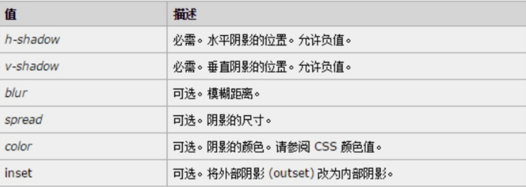
- 前两个属性是必须写的。其余的可以省略。
- 外阴影 (outset) 但是不能写 默认 想要内阴影 inset
1 | img { |
浮动(float)
普通流(normal flow)
这个单词很多人翻译为 文档流 ， 字面翻译 普通流 或者标准流都可以。
前面我们说过，网页布局的核心，就是用CSS来摆放盒子位置。如何把盒子摆放到合适的位置？
CSS的定位机制有3种：普通流（标准流）、浮动和定位。
html语言当中另外一个相当重要的概念———-标准流！或者普通流。普通流实际上就是一个网页内标签元素正常从上到下，从左到右排列顺序的意思，比如块级元素会独占一行，行内元素会按顺序依次前后排列；按照这种大前提的布局排列之下绝对不会出现例外的情况叫做普通流布局。

浮动(float)
浮动最早是用来控制图片，以便达到其他元素（特别是文字）实现“环绕”图片的效果。

后来，我们发现浮动有个很有意思的事情：就是让任何盒子可以一行排列,因此我们就慢慢的偏离主题，用浮动的特性来布局了。（CSS3已经我们真正意义上的网页布局，具体CSS3我们会详细解释）

什么是浮动？
元素的浮动是指设置了浮动属性的元素会脱离标准普通流的控制，移动到其父元素中指定位置的过程。
在CSS中，通过float属性来定义浮动，其基本语法格式如下：
1 | 选择器{float:属性值;} |
| 属性值 | 描述 |
|---|---|
| left | 元素向左浮动 |
| right | 元素向右浮动 |
| none | 元素不浮动（默认值） |
浮动详细内幕特性
1 | 浮动首先创建包含块的概念（包裹）。就是说， 浮动的元素总是找理它最近的父级元素对齐。但是不会超出内边距的范围。 |

1 | 浮动的元素排列位置，跟上一个元素（块级）有关系。如果上一个元素有浮动，则A元素顶部会和上一个元素的顶部对齐；如果上一个元素是标准流，则A元素的顶部会和上一个元素的底部对齐。 |

1 | 由2可以推断出，一个父盒子里面的子盒子，如果其中一个子级有浮动的，则其他子级都需要浮动。这样才能一行对齐显示。 |
1 | 浮动脱离标准流，不占位置，会影响标准流。浮动只有左右浮动。 |
1 | 元素添加浮动后，元素会具有行内块元素的特性。元素的大小完全取决于定义的大小或者默认的内容多少 |
1 | 浮动根据元素书写的位置来显示相应的浮动。 |
总结： 浮动 —> 浮漏特
浮： 加了浮动的元素盒子是浮起来的，漂浮在其他的标准流盒子上面。
漏： 加了浮动的盒子，不占位置的，它浮起来了，它原来的位置漏 给了标准流的盒子。
特： 特别注意，这是特殊的使用，有很多的不好处，使用要谨慎。
清除浮动

人生就像乘坐北京地铁一号线：
途经国贸，羡慕繁华；
途经天安门，幻想权力；
途经金融街，梦想发财；
经过公主坟，遥想华丽家族；
经过玉泉路，依然雄心勃勃…
这时，有个声音飘然入耳:乘客你好,八宝山马上就要到了！
顿时醒悟：人生苦短，有始有终。
好比我们的浮动，有浮动开始，则就应该有浮动结束。
为什么要清除浮动
我们前面说过，浮动本质是用来做一些文字混排效果的，但是被我们拿来做布局用，则会有很多的问题出现， 但是，你不能说浮动不好 。
由于浮动元素不再占用原文档流的位置，所以它会对后面的元素排版产生影响，为了解决这些问题，此时就需要在该元素中清除浮动。
如果浮动一开始就是一个美丽的错误，那么请用正确的方法挽救它。
清除浮动本质
清除浮动主要为了解决父级元素因为子级浮动引起内部高度为0 的问题。


清除浮动的方法
其实本质叫做闭合浮动更好一些, 记住，清除浮动就是把浮动的盒子圈到里面，让父盒子闭合出口和入口不让他们出来影响其他元素。
在CSS中，clear属性用于清除浮动，其基本语法格式如下：
1 | 选择器{clear:属性值;} |
| 属性值 | 描述 |
|---|---|
| left | 不允许左侧有浮动元素（清除左侧浮动的影响） |
| right | 不允许右侧有浮动元素（清除右侧浮动的影响） |
| both | 同时清除左右两侧浮动的影响 |
额外标签法
1 | 是W3C推荐的做法是通过在浮动元素末尾添加一个空的标签例如 <div style=”clear:both”></div>，或则其他标签br等亦可。 |
优点： 通俗易懂，书写方便
缺点： 添加许多无意义的标签，结构化较差。 我只能说，w3c你推荐的方法我不接受，你不值得拥有。。。
父级添加overflow属性方法
可以通过触发BFC的方式，可以实现清除浮动效果。（BFC后面讲解）
1 | 可以给父级添加： overflow为 hidden|auto|scroll 都可以实现。 |
优点： 代码简洁
缺点： 内容增多时候容易造成不会自动换行导致内容被隐藏掉，无法显示需要溢出的元素。
使用after伪元素清除浮动
使用方法：
1 | .clearfix:after { content: "."; display: block; height: 0; clear: both; visibility: hidden; } |
优点： 符合闭合浮动思想 结构语义化正确
缺点： 由于IE6-7不支持:after，使用 zoom:1触发 hasLayout。
代表网站： 百度、淘宝网、网易等

注意： content:”.” 里面尽量跟一个小点，或者其他，尽量不要为空，否则再firefox 7.0前的版本会有生成空格。
使用before和after双伪元素清除浮动
使用方法：
1 | .clearfix:before,.clearfix:after { |
优点： 代码更简洁
缺点： 由于IE6-7不支持:after，使用 zoom:1触发 hasLayout。
代表网站： 小米、腾讯等

版心和布局流程
阅读报纸时容易发现，虽然报纸中的内容很多，但是经过合理地排版，版面依然清晰、易读。同样，在制作网页时，要想使页面结构清晰、有条理，也需要对网页进行“排版”。
“版心”是指网页中主体内容所在的区域。一般在浏览器窗口中水平居中显示，常见的宽度值为960px、980px、1000px、1200px等。
布局流程
为了提高网页制作的效率，布局时通常需要遵守一定的布局流程，具体如下：
1、确定页面的版心（可视区）。
2、分析页面中的行模块，以及每个行模块中的列模块。
3、制作HTML页面，CSS文件。
4、CSS初始化，然后开始运用盒子模型的原理，通过DIV+CSS布局来控制网页的各个模块。
一列固定宽度且居中

最普通的，最为常用的结构
两列左窄右宽型

比如小米 小米官网
通栏平均分布型
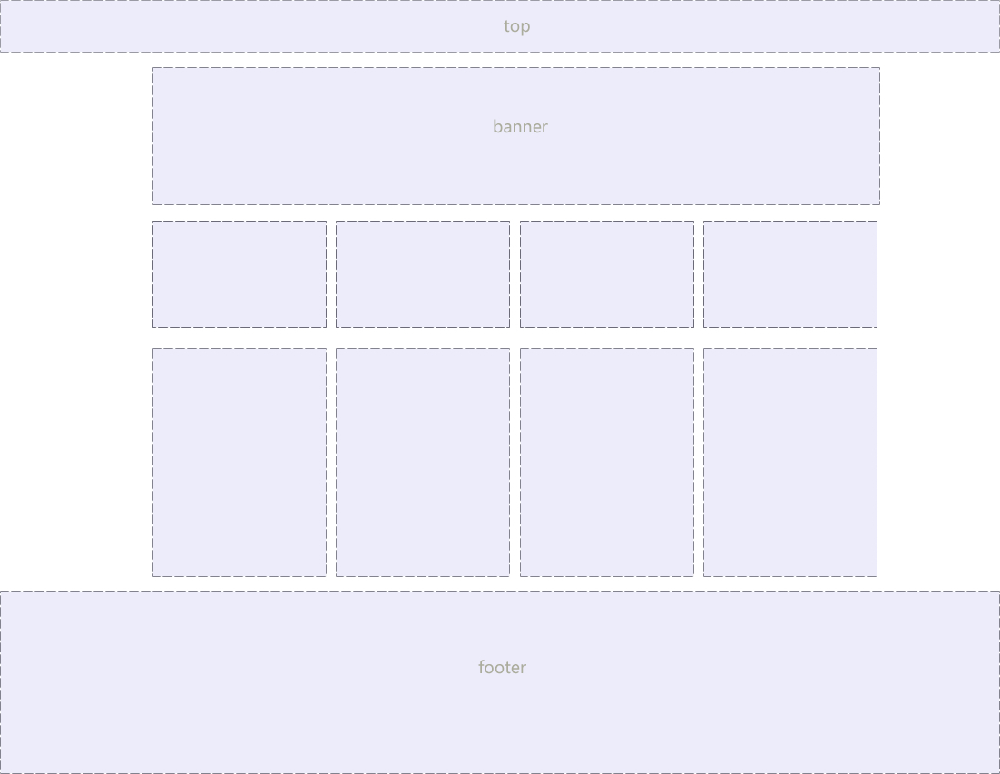
比如锤子 锤子官网
Photoshop
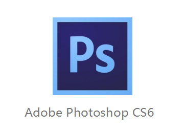
Photoshop基本使用
PS界面组成：
菜单栏、选项栏、工具栏、浮动面板（拖拽名称，可单独操作面板）、绘图窗口
窗口菜单，可显示隐藏所有面板
工作区：（新建）
1、调整浮动面板
2、选项栏后方，新建工作区，命名。
删除工作区：先选择其他工作区，再操作删除工作区。
基本操作
文件下拉菜单：
1、新建 新建文档 CTRL+N
单位：像素 厘米 毫米
屏幕显示： 单位 像素 72像素/英寸 RGB颜色模式
印刷行业： 单位 CM/MM 300像素/英寸 CMYK颜色模式
2、关闭文档 CTRL+W
3、存储 CTRL+S （替存）
4、存储为 CTRL+SHIFT+S 另存一份文件
5、格式：
.psd PS源文件格式 图层、文字、样式等，可再次编辑
（给自己）
.jpg 有损压缩格式 （给客户） 品质 最高12
6、文件打开：
1）文件下拉菜单-打开（CTRL+O欧）（双击软件空白处=打开）
2）拖拽文件至选项栏上方，释放鼠标
移动工具 V
1、不同文件之间拖拽图像。
图层操作
图层面板快捷键 F7
图层选择： 使用移动工具V
1、图层缩览图判断
2、按住CTRL,在目标图像上单击
3、将光标放置在目标图像上右键，选择图层名称
图层面板中加选图层：
1、按SHIFT，单击另一目标图层 中间所有图层被选中
2、按CTRL，单击另一目标图层 只选中目标图层
复制图层：选中目标图层后（移动工具状态下）
1、按ALT拖拽图像
2、CTRL+J （重合）
3、拖拽目标至创建新图层按钮
图层编组
选中目标图层，CTRL+G
取消编组：CTRL+SHIFT+G
双击图层名称可重新命名
双击组名称，可命名组
移动工具V选择组或图层时，需设置选项栏

图层上下位置移动
1、选中目标图层，在图层面拖拽
2、CTRL+] 向上移动图层
CTRL+[ 向下移动图层
3、CTRL+SHIFT+] 图层置顶
CTRL+SHIFT+[ 图层置底
移动选区或图像时：
移动过程中，没释放鼠标，按住SHIFT，可同一水平线、同一垂线、45度移动。
图层透明度
不透明度：设置图层的不透明程度 0%完全透明，不可见
100%完全不透明，真实可见
填充：与不透明度效果类似
 )
)
键盘数字键，可快速设置透明度数值
套索工具 L
1、套索工具 L 在屏幕上拖拽鼠标左键，释放后生成选区
2、多边形套索 L 连续单击绘制多边形选区
闭合方法：1、单击起始点 2、双击任意位置
DELETE删除当前点
3、磁性套索工具 L 单击颜色交界后，沿交界线拖拽鼠标，可生成选区。
磁性套索 L
L 在颜色交界的位置单击后拖动。单击起始点后，生成选区。 大小写键：CAPSLOCK 可控制光标精确状态。
魔棒工具 W
以单击位置为选择色，选择相似颜色生成选区。

容差：选择颜色的范围 容差小，颜色选择精确。 0-255
连续：勾选连续时，相连颜色生成选区。
不勾选，画面中所有相似颜色被选中生成选区。
按SHIFT在未生成选区位置单击，可选区相加。
选区反选：CTRL+SHIFT+I
选区布尔运算

选区面积大小的变化。
新选区：保持选中状态
添加到选区：相加运算（按住SHIFT再绘制选区）
从选区减去：相减（按住ALT再绘制选区）
与选区交叉：重合部分保留。（按住ALT+SHIFT再绘制选区）
钢笔工具： P
作用：绘制路径，生成选区，抠图。
组成;路径线和锚点
绘制路径后，CTRL+回车，生成选区。
路径类型：
直线型路径：连续单击
曲线型路径：第一点单击，第二点拖动鼠标。
Photoshop 切图
PS切图 可以 分为 手动 利用切片切图 以及 利用PS的插件快速切图
切片工具
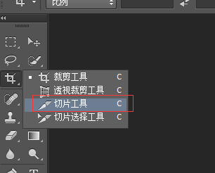
利用切片工具手动划出
2.图层—新建基于图层的切片
利用标尺 基础参考线的切片

切图插件
Cutterman是一款运行在photoshop中的插件，能够自动将你需要的图层进行输出， 以替代传统的手工 “导出web所用格式” 以及使用切片工具进行挨个切图的繁琐流程。 它支持各种各样的图片尺寸、格式、形态输出，方便你在pc、ios、Android等端上使用。 它不需要你记住一堆的语法、规则，纯点击操作，方便、快捷，易于上手。

定位(position)
如果，说浮动， 关键在一个 “浮” 字上面， 那么 我们的定位，关键在于一个 “位” 上。
PS: 定位是我们CSS算是数一数二难点的了，但是，你务必要学好它，我们CSS离不开定位，特别是后面的js特效，天天和定位打交道。不要抵触它，反而要爱上它，它可以让我们工作更加轻松哦！
为什么要用定位？
那么定位，最长运用的场景再那里呢？ 来看几幅图片，你一定会有感悟！
第一幅图， 小黄色块可以再图片上移动：

第二幅图， 左右箭头压住图片：

第三幅图, hot 再盒子外面多出一块，更加突出：

以上三个小地方，如果用标准流或者浮动，实现会比较复杂或者难以实现，此时我们用定位来做，just soso！
元素的定位属性
元素的定位属性主要包括定位模式和边偏移两部分。
1、边偏移
| 边偏移属性 | 描述 |
|---|---|
| top | 顶端偏移量，定义元素相对于其父元素上边线的距离 |
| bottom | 底部偏移量，定义元素相对于其父元素下边线的距离 |
| left | 左侧偏移量，定义元素相对于其父元素左边线的距离 |
| right | 右侧偏移量，定义元素相对于其父元素右边线的距离 |
也就说，以后定位要和这边偏移搭配使用了， 比如 top: 100px; left: 30px; 等等
2、定位模式
在CSS中，position属性用于定义元素的定位模式，其基本语法格式如下：
选择器{position:属性值;}
position属性的常用值
| 值 | 描述 |
|---|---|
| static | 自动定位（默认定位方式） |
| relative | 相对定位，相对于其原文档流的位置进行定位 |
| absolute | 绝对定位，相对于其上一个已经定位的父元素进行定位 |
| fixed | 固定定位，相对于浏览器窗口进行定位 |
静态定位(static)
静态定位是所有元素的默认定位方式，当position属性的取值为static时，可以将元素定位于静态位置。 所谓静态位置就是各个元素在HTML文档流中默认的位置。
上面的话翻译成白话： 就是网页中所有元素都默认的是静态定位哦！ 其实就是标准流的特性。
在静态定位状态下，无法通过边偏移属性（top、bottom、left或right）来改变元素的位置。
PS： 静态定位其实没啥可说的。
相对定位relative(自恋型)
1 | 小笑话： |
相对定位是将元素相对于它在标准流中的位置进行定位，当position属性的取值为relative时，可以将元素定位于相对位置。
对元素设置相对定位后，可以通过边偏移属性改变元素的位置，但是它在文档流中的位置仍然保留。如下图所示，即是一个相对定位的效果展示：

注意： 相对定位最重要的一点是，它可以通过边偏移移动位置，但是原来的所占的位置，继续占有。
就是说，相对定位的盒子仍在标准流中，它后面的盒子仍以标准流方式对待它。
绝对定位absolute (拼爹型)
1 | 小笑话： |
[注意] 如果文档可滚动，绝对定位元素会随着它滚动，因为元素最终会相对于正常流的某一部分定位。
当position属性的取值为absolute时，可以将元素的定位模式设置为绝对定位。
注意： 绝对定位最重要的一点是，它可以通过边偏移移动位置，但是它完全脱标，完全不占位置。
父级没有定位
若所有父元素都没有定位，以浏览器为准对齐(document文档)。

父级有定位
绝对定位是将元素依据最近的已经定位（绝对、固定或相对定位）的父元素（祖先）进行定位。

绝对定位的盒子没有边偏移
如果只是给盒子指定了 定位，但是没有给与边偏移，则改盒子以标准流来显示排序，和上一个盒子的底边对齐，但是不占有位置。
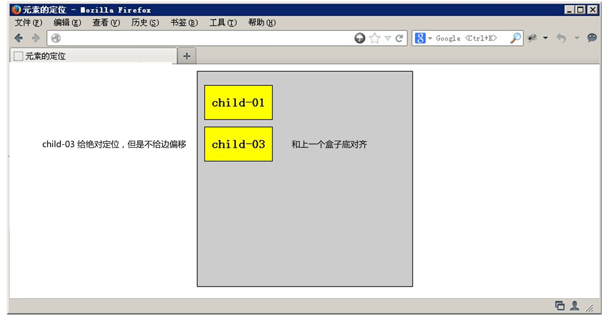
子绝父相
这个“子绝父相”太重要了，是我们学习定位的口诀，时时刻刻记住的。
这句话的意思是 子级是绝对定位的话， 父级要用相对定位。
首先， 我们说下， 绝对定位是将元素依据最近的已经定位绝对、固定或相对定位）的父元素（祖先）进行定位。
就是说， 子级是绝对定位，父亲只要是定位即可（不管父亲是绝对定位还是相对定位，甚至是固定定位都可以），就是说， 子绝父绝，子绝父相都是正确的。
但是，在我们网页布局的时候， 最常说的 子绝父相是怎么来的呢？ 请看如下图：

草图就是如下：

所以，我们可以得出如下结论：
因为子级是绝对定位，不会占有位置， 可以放到父盒子里面的任何一个地方。
父盒子布局时，需要占有位置，因此父亲只能是 相对定位.
这就是子绝父相的由来。
固定定位fixed(认死理型)
固定定位是绝对定位的一种特殊形式，它以浏览器窗口作为参照物来定义网页元素。当position属性的取值为fixed时，即可将元素的定位模式设置为固定定位。
当对元素设置固定定位后，它将脱离标准文档流的控制，始终依据浏览器窗口来定义自己的显示位置。不管浏览器滚动条如何滚动也不管浏览器窗口的大小如何变化，该元素都会始终显示在浏览器窗口的固定位置。
固定定位有两点：
- 固定定位的元素跟父亲没有任何关系，只认浏览器。
- 固定定位完全脱标，不占有位置，不随着滚动条滚动。
记忆法： 就类似于孙猴子， 无父无母，好不容易找到一个可靠的师傅（浏览器），就听的师傅的，别的都不听。

ie6等低版本浏览器不支持固定定位。
叠放次序（z-index）
当对多个元素同时设置定位时，定位元素之间有可能会发生重叠。
在CSS中，要想调整重叠定位元素的堆叠顺序，可以对定位元素应用z-index层叠等级属性，其取值可为正整数、负整数和0。
比如： z-index: 2;
注意：
z-index的默认属性值是0，取值越大，定位元素在层叠元素中越居上。
如果取值相同，则根据书写顺序，后来居上。
后面数字一定不能加单位。
只有相对定位，绝对定位，固定定位有此属性，其余标准流，浮动，静态定位都无此属性，亦不可指定此属性。
四种定位总结
| 定位模式 | 是否脱标占有位置 | 是否可以使用边偏移 | 移动位置基准 |
|---|---|---|---|
| 静态static | 不脱标，正常模式 | 不可以 | 正常模式 |
| 相对定位relative | 不脱标，占有位置 | 可以 | 相对自身位置移动 |
| 绝对定位absolute | 完全脱标，不占有位置 | 可以 | 相对于定位父级移动位置 |
| 固定定位fixed | 完全脱标，不占有位置 | 可以 | 相对于浏览器移动位置 |
定位模式转换
跟 浮动一样， 元素添加了 绝对定位和固定定位之后， 元素模式也会发生转换， 都转换为 行内块模式， 因此 比如 行内元素 如果添加了 绝对定位或者 固定定位后，可以不用转换模式，直接给高度和宽度就可以了。
元素的显示与隐藏
在CSS中有三个显示和隐藏的单词比较常见，我们要区分开，他们分别是 display visibility 和 overflow。
他们的主要目的是让一个元素在页面中消失，但是不在文档源码中删除。 最常见的是网站广告，当我们点击类似关闭不见了，但是我们重新刷新页面，它们又会出现和你玩躲猫猫！！
display 显示
display 设置或检索对象是否及如何显示。
display : none 隐藏对象 与它相反的是 display:block 除了转换为块级元素之外，同时还有显示元素的意思。
特点： 隐藏之后，不再保留位置。
visibility 可见性
设置或检索是否显示对象。
visible : 对象可视
hidden : 对象隐藏
特点： 隐藏之后，继续保留原有位置。（停职留薪）
overflow 溢出
检索或设置当对象的内容超过其指定高度及宽度时如何管理内容。
visible : 不剪切内容也不添加滚动条。
auto : 超出自动显示滚动条，不超出不显示滚动条
hidden : 不显示超过对象尺寸的内容，超出的部分隐藏掉
scroll : 不管超出内容否，总是显示滚动条
CSS高级技巧
CSS用户界面样式
所谓的界面样式， 就是更改一些用户操作样式， 比如 更改用户的鼠标样式， 表单轮廓等。但是比如滚动条的样式改动受到了很多浏览器的抵制，因此我们就放弃了。 防止表单域拖拽
鼠标样式cursor
设置或检索在对象上移动的鼠标指针采用何种系统预定义的光标形状。
1 | cursor : default 小白 | pointer 小手 | move 移动 | text 文本 |
鼠标放我身上查看效果哦：
1 | <ul> |
尽量不要用hand 因为 火狐不支持 pointer ie6以上都支持的尽量用
轮廓 outline
是绘制于元素周围的一条线，位于边框边缘的外围，可起到突出元素的作用。
1 | outline : outline-color ||outline-style || outline-width |
但是我们都不关心可以设置多少，我们平时都是去掉的。
最直接的写法是 ： outline: 0;
1 | <input type="text" style="outline: 0;"/> |
防止拖拽文本域resize
resize：none 这个单词可以防止 火狐 谷歌等浏览器随意的拖动 文本域。
右下角可以拖拽：
右下角不可以拖拽：
1 | <textarea style="resize: none;"></textarea> |
vertical-align 垂直对齐
以前我们讲过让带有宽度的块级元素居中对齐，是margin: 0 auto;
以前我们还讲过让文字居中对齐，是 text-align: center;
但是我们从来没有讲过有垂直居中的属性， 我们的妈妈一直很担心我们的垂直居中怎么做。
vertical-align 垂直对齐， 这个看上去很美好的一个属性， 实际有着不可捉摸的脾气，否则我们也不会这么晚来讲解。

1 | vertical-align : baseline |top |middle |bottom |
设置或检索对象内容的垂直对其方式。
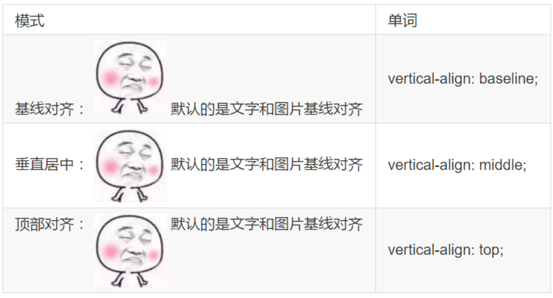
vertical-align 不影响块级元素中的内容对齐，它只针对于 行内元素或者行内块元素，特别是行内块元素， 通常用来控制图片和表单等。
图片和文字对齐
所以我们知道，我们可以通过vertical-align 控制图片和文字的垂直关系了。 默认的图片会和文字基线对齐。
去除图片底侧空白缝隙
有个很重要特性你要记住： 如果一个元素没有基线，比如图片或者表单等行内块元素，则他的底线会和父级盒子的基线对齐。 这样会造成一个问题，就是图片底侧会有一个空白缝隙。

解决的方法就是：
- 给img vertical-align:middle | top等等。 让图片不要和基线对齐。

- 给img 添加 display：block; 转换为块级元素就不会存在问题了。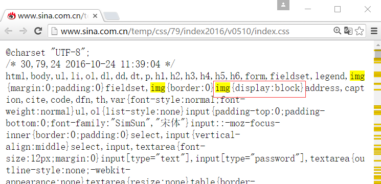
CSS精灵技术（sprite）
精灵技术产生的背景

图所示为网页的请求原理图，当用户访问一个网站时，需要向服务器发送请求，网页上的每张图像都要经过一次请求才能展现给用户。
然而，一个网页中往往会应用很多小的背景图像作为修饰，当网页中的图像过多时，服务器就会频繁地接受和发送请求，这将大大降低页面的加载速度。为了有效地减少服务器接受和发送请求的次数，提高页面的加载速度，出现了CSS精灵技术（也称CSS Sprites、CSS雪碧）。
精灵技术本质
简单地说，CSS精灵是一种处理网页背景图像的方式。它将一个页面涉及到的所有零星背景图像都集中到一张大图中去，然后将大图应用于网页，这样，当用户访问该页面时，只需向服务发送一次请求，网页中的背景图像即可全部展示出来。通常情况下，这个由很多小的背景图像合成的大图被称为精灵图，如下图所示为京东网站中的一个精灵图。
精灵技术的使用
CSS 精灵其实是将网页中的一些背景图像整合到一张大图中（精灵图），然而，各个网页元素通常只需要精灵图中不同位置的某个小图，要想精确定位到精灵图中的某个小图，就需要使用CSS的background-image、background-repeat和background-position属性进行背景定位，其中最关键的是使用background-position属性精确地定位。
制作精灵图
CSS 精灵其实是将网页中的一些背景图像整合到一张大图中（精灵图），那我们要做的，就是把小图拼合成一张大图。
大部分情况下，精灵图都是网页美工做。
1 | 我们精灵图上放的都是小的装饰性质的背景图片。 插入图片不能往上放。 |
结束语： 小公司，背景图片很少的情况，没有必要使用精灵技术，维护成本太高。 如果是背景图片比较多，可以建议使用精灵技术。
字体图标
图片是有诸多优点的，但是缺点很明显，比如图片不但增加了总文件的大小，还增加了很多额外的”http请求”，这都会大大降低网页的性能的。更重要的是图片不能很好的进行“缩放”，因为图片放大和缩小会失真。 我们后面会学习移动端响应式，很多情况下希望我们的图标是可以缩放的。此时，一个非常重要的技术出现了，额不是出现了，是以前就有，是被从新”宠幸”啦。。 这就是字体图标（iconfont).
字体图标优点
1 | 可以做出跟图片一样可以做的事情,改变透明度、旋转度，等.. |
字体图标使用流程
总体来说，字体图标按照如下流程：

设计字体图标
假如图标是我们公司单独设计，那就需要第一步了，这个属于UI设计人员的工作， 他们在 illustrator 或 Sketch 这类矢量图形软件里创建 icon图标， 比如下图：

之后保存为svg格式，然后给我们前端人员就好了。
其实第一步，我们不需要关心，只需要给我们这些图标就可以了，如果图标是大众的，网上本来就有的，可以直接跳过第一步，进入第三步。
上传生成字体包
当UI设计人员给我们svg文件的时候，我们需要转换成我们页面能使用的字体文件， 而且需要生成的是兼容性的适合各个浏览器的。
推荐网站： http://icomoon.io
icomoon字库
IcoMoon成立于2011年，推出的第一个自定义图标字体生成器，它允许用户选择他们所需要的图标，使它们成一字型。 内容种类繁多，非常全面，唯一的遗憾是国外服务器，打开网速较慢。
推荐网站： http://www.iconfont.cn/
阿里icon font字库
这个是阿里妈妈M2UX的一个icon font字体图标字库，包含了淘宝图标库和阿里妈妈图标库。可以使用AI制作图标上传生成。 一个字，免费，免费！！
fontello
在线定制你自己的icon font字体图标字库，也可以直接从GitHub下载整个图标集，该项目也是开源的。
Font-Awesome
http://fortawesome.github.io/Font-Awesome/
这是我最喜欢的字库之一了，更新比较快。目前已经有369个图标了。
Glyphicon Halflings
这个字体图标可以在Bootstrap下免费使用。自带了200多个图标。
Icons8
提供PNG免费下载，像素大能到500PX
下载兼容字体包
刚才上传完毕， 网站会给我们把UI做的svg图片转换为我们的字体格式， 然后下载下来就好了
当然，我们不需要自己专门的图标，是想网上找几个图标使用，以上2步可以直接省略了， 直接到刚才的网站上找喜欢的下载使用吧。

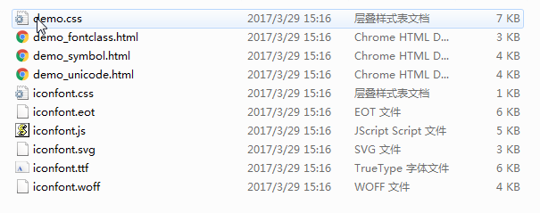
字体引入到HTML
最后一步，是最重要的一步了， 就是字体文件已经有了，我们需要引入到我们页面中。
首先把 以下4个文件放入到 fonts文件夹里面。 通俗的做法

第一步：引入项目下面生成的fontclass代码：
1
<link rel="stylesheet" type="text/CSS" href="./iconfont.CSS">
第二步：挑选相应图标并获取类名，应用于页面：
1
<i class="iconfont icon-xxx"></i>
滑动门
先来体会下现实中的滑动门,或者你可以叫做推拉门：

滑动门出现的背景
制作网页时，为了美观，常常需要为网页元素设置特殊形状的背景，比如微信导航栏，有凸起和凹下去的感觉，最大的问题是里面的字数不一样多，咋办？

为了使各种特殊形状的背景能够自适应元素中文本内容的多少，出现了CSS滑动门技术。它从新的角度构建页面，使各种特殊形状的背景能够自由拉伸滑动，以适应元素内部的文本内容，可用性更强。 最常见于各种导航栏的滑动门。
核心技术
核心技术就是利用CSS精灵（主要是背景位置）和盒子padding撑开宽度, 以便能适应不同字数的导航栏。
一般的经典布局都是这样的：
1 | <li> |
总结：
- a 设置 背景左侧，padding撑开合适宽度。
- span 设置背景右侧， padding撑开合适宽度 剩下由文字继续撑开宽度。
- 之所以a包含span就是因为 整个导航都是可以点击的。
伸缩布局(CSS3)
CSS3在布局方面做了非常大的改进，使得我们对块级元素的布局排列变得十分灵活，适应性非常强，其强大的伸缩性，在响应式开中可以发挥极大的作用。
主轴：Flex容器的主轴主要用来配置Flex项目，默认是水平方向
侧轴：与主轴垂直的轴称作侧轴，默认是垂直方向的
方向：默认主轴从左向右，侧轴默认从上到下
主轴和侧轴并不是固定不变的，通过flex-direction可以互换。
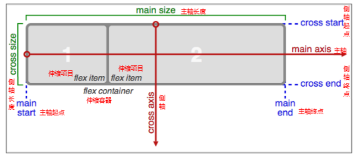
Flex布局的语法规范经过几年发生了很大的变化，也给Flexbox的使用带来一定的局限性，因为语法规范版本众多，浏览器支持不一致，致使Flexbox布局使用不多
2、各属性详解**
a、flex-direction调整主轴方向（默认为水平方向）
b、justify-content调整主轴对齐
c、align-items调整侧轴对齐
d、flex-wrap控制是否换行
e、align-content堆栈（由flex-wrap产生的独立行）对齐
f、flex-flow是flex-direction、flex-wrap的简写形式
g、flex子项目在主轴的缩放比例，不指定flex属性，则不参与伸缩分配
h、order控制子项目的排列顺序，正序方式排序，从小到大
此知识点重在理解，要明确找出主轴、侧轴、方向，各属性对应的属性值
过渡(CSS3)
过渡（transition)是CSS3中具有颠覆性的特征之一，我们可以在不使用 Flash 动画或 JavaScript 的情况下，当元素从一种样式变换为另一种样式时为元素添加效果。
帧动画：通过一帧一帧的画面按照固定顺序和速度播放。如电影胶片

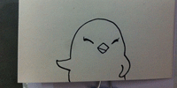
在CSS3里使用transition可以实现补间动画（过渡效果），并且当前元素只要有“属性”发生变化时即存在两种状态(我们用A和B代指），就可以实现平滑的过渡，为了方便演示采用hover切换两种状态，但是并不仅仅局限于hover状态来实现过渡。
语法格式:
1 | transition: 要过渡的属性 花费时间 运动曲线 何时开始; |
| 属性 | 描述 | CSS |
|---|---|---|
| transition | 简写属性，用于在一个属性中设置四个过渡属性。 | 3 |
| transition-property | 规定应用过渡的 CSS 属性的名称。 | 3 |
| transition-duration | 定义过渡效果花费的时间。默认是 0。 | 3 |
| transition-timing-function | 规定过渡效果的时间曲线。默认是 “ease”。 | 3 |
| transition-delay | 规定过渡效果何时开始。默认是 0。 | 3 |
运动曲线示意图：

1 | img { |
2D变形(CSS3)
转换是CSS3中具有颠覆性的特征之一，可以实现元素的位移、旋转、变形、缩放，甚至支持矩阵方式，配合过渡和即将学习的动画知识，可以取代大量之前只能靠Flash才可以实现的效果。
变形转换 transform
- 移动 translate(x, y)

1 | translate(50px,50px); |
使用translate方法来将文字或图像在水平方向和垂直方向上分别垂直移动50像素。
可以改变元素的位置，x、y可为负值；
1 | translate(x,y)水平方向和垂直方向同时移动（也就是X轴和Y轴同时移动） |
1 | .box { |
让定位的盒子水平居中
- 缩放 scale(x, y)

1 | transform:scale(0.8,1); |
可以对元素进行水平和垂直方向的缩放。该语句使用scale方法使该元素在水平方向上缩小了20%，垂直方向上不缩放。
1 | scale(X,Y)使元素水平方向和垂直方向同时缩放（也就是X轴和Y轴同时缩放） |
scale()的取值默认的值为1，当值设置为0.01到0.99之间的任何值，作用使一个元素缩小；而任何大于或等于1.01的值，作用是让元素放大
- 旋转 rotate(deg)
可以对元素进行旋转，正值为顺时针，负值为逆时针；

1 | transform:rotate(45deg); |
- 当元素旋转以后，坐标轴也跟着发生的转变
- 调整顺序可以解决，把旋转放到最后
- 注意单位是 deg 度数
案例旋转扑克牌
1 | body { |
- 倾斜 skew(deg, deg)

1 | transform:skew(30deg,0deg); |
该实例通过skew方法把元素水平方向上倾斜30度，处置方向保持不变。
可以使元素按一定的角度进行倾斜，可为负值，第二个参数不写默认为0。
5.transform-origin可以调整元素转换的原点

1 | div{transform-origin: left top;transform: rotate(45deg); } /* 改变元素原点到左上角，然后进行顺时旋转45度 */ |
案例： 菱形照片 三角盒子
3D变形
左手坐标系
伸出左手，让拇指和食指成“L”形，大拇指向右，食指向上，中指指向前方。这样我们就建立了一个左手坐标系，拇指、食指和中指分别代表X、Y、Z轴的正方向。如下图

CSS3中的3D坐标系与上述的3D坐标系是有一定区别的，相当于其绕着X轴旋转了180度，如下图

rotateX()
就是沿着 x 立体旋转.

1 | img { |
rotateY()
沿着y轴进行旋转

1 | img { |
rotateZ()
沿着z轴进行旋转
1 | img { |
透视(perspective)
电脑显示屏是一个2D平面，图像之所以具有立体感（3D效果），其实只是一种视觉呈现，通过透视可以实现此目的。
透视可以将一个2D平面，在转换的过程当中，呈现3D效果。
注：并非任何情况下需要透视效果，根据开发需要进行设置。
perspective有两种写法
- 作为一个属性，设置给父元素，作用于所有3D转换的子元素
- 作为transform属性的一个值，做用于元素自身
理解透视距离原理：

开门案例
1 | body { |
translateX(x)
仅水平方向移动**（X轴移动）

主要目的实现移动效果
translateY(y)
仅垂直方向移动（Y轴移动）

translateZ(z)
transformZ的直观表现形式就是大小变化，实质是XY平面相对于视点的远近变化（说远近就一定会说到离什么参照物远或近，在这里参照物就是perspective属性）。比如设置了perspective为200px;那么transformZ的值越接近200，就是离的越近，看上去也就越大，超过200就看不到了，因为相当于跑到后脑勺去了，我相信你正常情况下，是看不到自己的后脑勺的。
3D呈现（transform-style）
设置内嵌的元素在 3D 空间如何呈现，这些子元素必须为转换原素。
flat：所有子元素在 2D 平面呈现
preserve-3d：保留3D空间
3D元素构建是指某个图形是由多个元素构成的，可以给这些元素的父元素设置transform-style: preserve-3d来使其变成一个真正的3D图形。
一般而言，该声明应用在3D变换的兄弟元素们的父元素上。
翻转盒子案例(百度钱包)
1 | body { |
动画(CSS3)
动画是CSS3中具有颠覆性的特征之一，可通过设置多个节点来精确控制一个或一组动画，常用来实现复杂的动画效果。
语法格式：
1 | animation:动画名称 动画时间 运动曲线 何时开始 播放次数 是否反方向; |

关于几个值，除了名字，动画时间，延时有严格顺序要求其它随意r
1 | @keyframes 动画名称 { |
1 | animation-iteration-count:infinite; 无限循环播放 |
小汽车案例
1 | body { |


 决定你是否有个好天然身体
决定你是否有个好天然身体  决定你是否打扮的美丽外观
决定你是否打扮的美丽外观